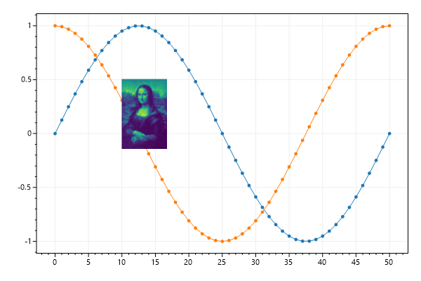
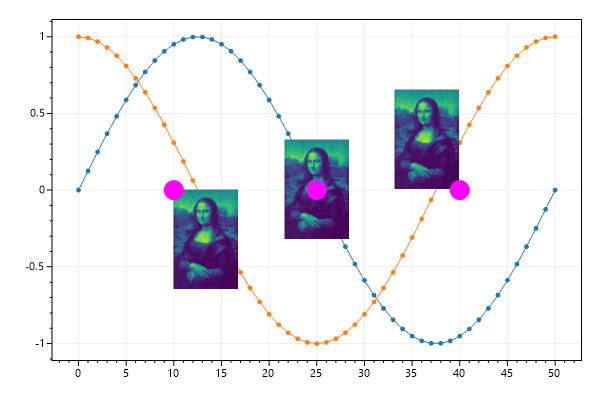
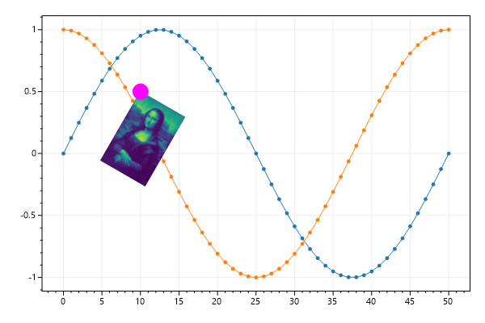
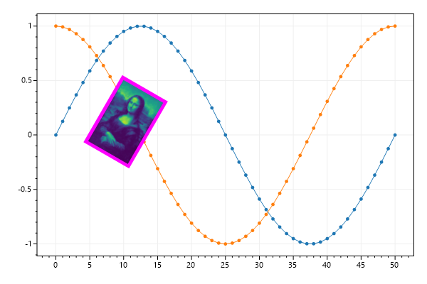

ScottPlot Cookbook: Plottable - Image
⚠️ Documentation is version-specific: This page was generated forScottPlot 4.1.4-beta
Additional documentation and more version-specific cookbooks are on the ScottPlot Website
Image Quickstart
The Image plottable places a Bitmap at a location in X/Y space.The image's position will move in space as the axes move, but the size of the bitmap will always be the same (matched to the display resolution).var plt = new ScottPlot.Plot(600, 400);
// display some sample data
plt.AddSignal(DataGen.Sin(51));
plt.AddSignal(DataGen.Cos(51));
// create the bitmap we want to display
Bitmap monaLisa = DataGen.SampleImage();
// create the image plottable and add it to the plot
var imagePlot = new ScottPlot.Plottable.Image() { Bitmap = monaLisa, X = 10, Y = .5 };
plt.Add(imagePlot);
plt.SaveFig("image_quickstart.png");

Image Alignment
By default the X/Y coordinates define the upper left position of the image, but alignment can be customized.var plt = new ScottPlot.Plot(600, 400);
// display some sample data
plt.AddSignal(DataGen.Sin(51));
plt.AddSignal(DataGen.Cos(51));
// display an image with 3 different alignments
Bitmap monaLisa = DataGen.SampleImage();
var ip1 = new ScottPlot.Plottable.Image() { Bitmap = monaLisa, X = 10 };
var ip2 = new ScottPlot.Plottable.Image() { Bitmap = monaLisa, X = 25, Alignment = Alignment.MiddleCenter };
var ip3 = new ScottPlot.Plottable.Image() { Bitmap = monaLisa, X = 40, Alignment = Alignment.LowerRight };
plt.Add(ip1);
plt.Add(ip2);
plt.Add(ip3);
plt.AddPoint(ip1.X, ip1.Y, Color.Magenta, size: 20);
plt.AddPoint(ip2.X, ip2.Y, Color.Magenta, size: 20);
plt.AddPoint(ip3.X, ip3.Y, Color.Magenta, size: 20);
plt.SaveFig("image_alignment.png");

Image Rotation
Images can be rotated, but rotation is always relative to the upper left corner.var plt = new ScottPlot.Plot(600, 400);
// display some sample data
plt.AddSignal(DataGen.Sin(51));
plt.AddSignal(DataGen.Cos(51));
// place a rotated image on the plot
Bitmap monaLisa = DataGen.SampleImage();
var ip1 = new ScottPlot.Plottable.Image() { Bitmap = monaLisa, X = 10, Y = .5, Rotation = 30 };
plt.Add(ip1);
plt.AddPoint(ip1.X, ip1.Y, color: Color.Magenta, size: 20);
plt.SaveFig("image_rotation.png");

Image Border
The borders of images can be customized.var plt = new ScottPlot.Plot(600, 400);
// display some sample data
plt.AddSignal(DataGen.Sin(51));
plt.AddSignal(DataGen.Cos(51));
// place an image on the plot
plt.Add(new ScottPlot.Plottable.Image()
{
Bitmap = DataGen.SampleImage(),
X = 10,
Y = .5,
Rotation = 30,
BorderColor = Color.Magenta,
BorderSize = 5,
});
plt.SaveFig("image_border.png");
